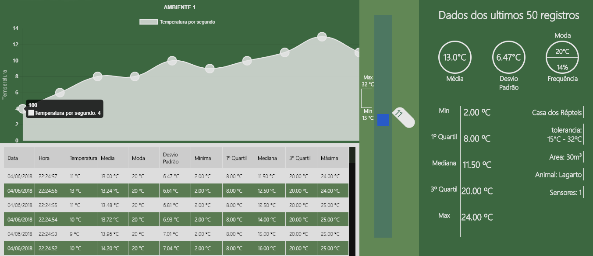

Objetivo:
Evitar maiores números de doenças e perdas de animais devido à problemas causados pela temperatura ambiente.
A APTUM desenvolveu o E-Scale visando o monitoramento de temperatura, auxiliando e condicionando nossos clientes em tomadas de prevenções.
Nosso projeto tem foco em ambientes fechados, como:
Como funciona?
Com estes fatores em evidência, decidimos montar uma solução de Internet das Coisas para acesso em tempo real do usuário.
A temperatura ambiente será captada através de sensores estrategicamente posicionados no local.
Os valores de temperatura serão registrados e apresentados em tempo real no nosso website, que poderá ser acessado através do seu navegador em seus dispositivos.
